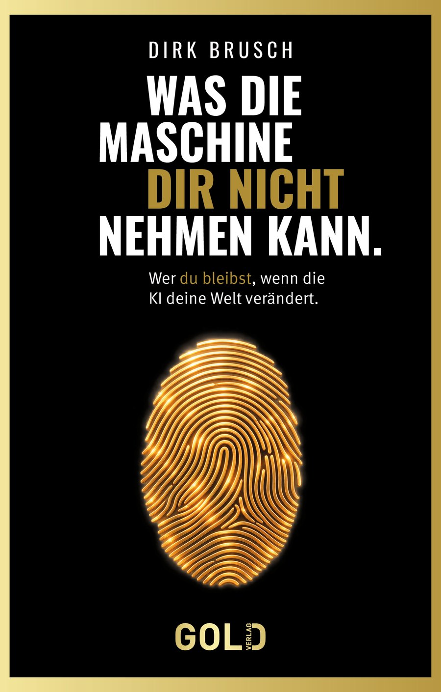
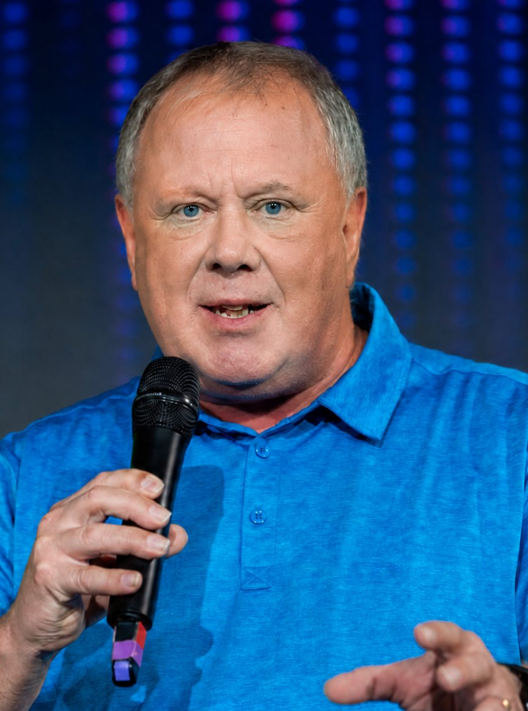
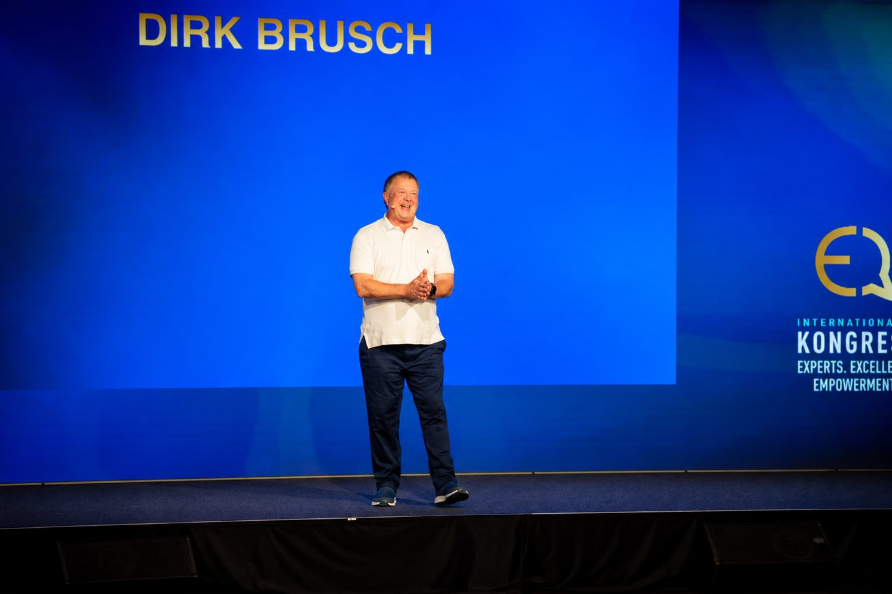
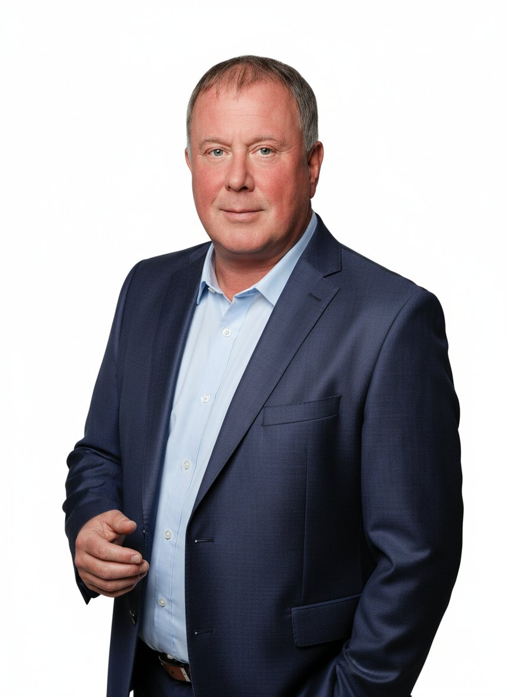

Kongresse, Firmenevents, Verbandstagungen
Für Veranstaltungen, die KI nicht nur als Technik zeigen wollen, sondern aus Sicht der Menschen, die mit ihr arbeiten.
Keynote für Kongresse, Firmenevents, Verbandstagungen und Unternehmen in der KI-Transformation
Viele Menschen stellen sich still eine Frage, die in keinem Projektplan steht: Werde ich noch gebraucht? Meine Keynote spricht sie aus. Ihr Publikum erlebt, dass es damit nicht allein ist, und geht mit einem ersten konkreten Schritt nach Hause.
Persönliche Rückmeldung – von mir selbst.

Das Buch zur Keynoteerscheint am 7. Dezember 2026 →
Die stille Frage
Für die Technik gibt es Schulungen. Für diese Frage gibt es selten einen Ort.
Normale Sorgen haben eine Adresse: ein Projekt, einen Termin, einen Chef, mit dem man reden kann. Diese Frage hat das nicht. Sie hat kein Gesicht. Sie hat keinen Absender. Und sie geht nicht weg.
Jemand, der vom Texten lebt, schreibt anonym im Netz:
„Wenn ich die KI um Feedback bitte, schäme ich mich so für meine Fähigkeiten.“
Der Job ist vielleicht in Gefahr, vielleicht nicht. Das Bild von sich ist es schon jetzt.
Bleibt sie unausgesprochen, trägt jeder sie allein. Dann erreicht die Einführung die Technik, aber nicht die Menschen.
Der Wendepunkt
Sie zeigt, was einem wirklich wichtig ist. In meinem Buch gibt es eine Sachbearbeiterin – eine Figur, verdichtet aus vielen echten Berichten. Mitte fünfzig, in einer Versicherung. Ein KI-System übernimmt neunzig Prozent ihrer Arbeit, das Prüfen von Schadensmeldungen. Am Anfang hat sie Angst. Dann wird ihr klar: Das Wichtigste an ihrem Beruf war nie das Prüfen. Das Wichtigste war die Kundin am Telefon, die völlig aufgelöst ist, weil ihr Antrag abgelehnt wurde. „Das macht das Ding nicht. Das mache ich.“
„Ich bin keine Prüferin mehr. Ich bin die Anwältin meiner Kundinnen in Krisenzeiten. Das fühlt sich nicht kleiner an. Das fühlt sich größer an.“
Zwei Frauen, dieselbe Welle – und zwei völlig verschiedene Haltungen.
Die eine hat ihren Wert daran gebunden, was sie kann.
Kann die Maschine es besser, bricht der Wert weg.
Die andere hat ihren Wert an das gebunden, wofür sie da ist.
Ihr kann die Maschine die Aufgabe abnehmen – aber nicht, wer sie ist.
Die Keynote
Eine Keynote über das, was die KI zuerst trifft, und über das, was dem Menschen bleibt. Ehrlich, ohne Hype und ohne Untergangsstimmung. Mit echten Stimmen und Geschichten, in denen sich Ihr Publikum wiederfindet.
Die stille Frage wird ausgesprochen. Die Menschen im Saal merken: Ich bin damit nicht allein.
Die Menschen verstehen, warum die KI zuerst das Selbstbild trifft – und woran ihr eigener Wert hängt, wenn die Maschine vieles kann.
Jeder nimmt mit, was er selbst tun kann, ohne darauf zu warten, dass die Organisation es tut.
Für welche Bühnen
Für Veranstaltungen, die KI nicht nur als Technik zeigen wollen, sondern aus Sicht der Menschen, die mit ihr arbeiten.
Für Unternehmen, die ihre Menschen dabei mitnehmen wollen – damit der Wandel die Belegschaft wirklich erreicht.
Was bleibt
Die Frage, die viele bisher allein getragen haben, ist ausgesprochen.
Diese Frage gibt die Richtung vor, wenn die Maschine vieles kann.
„Woran hängst du – an dem, was du kannst, oder an dem, wofür du da bist?“Aus der Keynote
Etwas, das schon am nächsten Morgen möglich ist – ohne Budget und ohne Erlaubnis von oben.
Auf einen Blick
Speaker-One-Pager, Pressefotos und Vita erhalten Sie auf Anfrage. Kurz anfragen →
Auf der Bühne

Kongress von Hermann Scherer, live und im Stream
Oktober 2026

Messetalk zum Buch am Stand des GOLD Verlags
Oktober 2026

Inspiration Stage
April 2026

Live vor Publikum
Juni 2026

Excellence Award von Hermann Scherer
Juli 2026

Dirk Brusch verbindet, was Speaking oft ausmacht: das Allgemeine mit dem Konkreten. Er erzählt nicht nur seine Story, er performt sie — und der Wechsel zwischen dem erzählenden und dem verkörpernden Dirk ist große Kunst. Natürliche Gestik, die die Botschaft trägt: der Mensch vor die Technik, vor das Business. Botschaft und Klarheit bis zum Schluss.
„Dirk Brusch begeistert mit Vortrag über KI und Menschlichkeit.“LZ am Sonntag · 18. Juli 2026
 Ganzen Artikel lesen →
Ganzen Artikel lesen →

Wer spricht
Erst mal hat mich die KI begeistert. Ich war vom ersten Tag an Feuer und Flamme. Bis mir auffiel, was ich aus vielen Wellen in der IT kenne: Wir feiern die Technik – und vergessen den Menschen davor. Und ich habe mitgefeiert.
Gemerkt habe ich es an einem Abend. Ich saß an einem Fragenkatalog für eine öffentliche Ausschreibung, einen halben Tag Arbeit. Dann habe ich die KI gefragt. Nach zwanzig Sekunden war sie fertig. Ich wusste nicht, ob ich beeindruckt sein sollte oder erschrocken. Ich war beides. Danach gab es Nächte, in denen ich wach lag – wegen einer Maschine. Mit vierundsechzig Jahren Lebenserfahrung. Ich wollte wissen: Bin ich der Einzige? Ich war nicht der Einzige.
Seit 1988 bin ich in der IT, zuerst als Ingenieur, seit 2004 als Unternehmensberater. Wandel habe ich jahrzehntelang für andere gestaltet. Diesmal trifft er mich selbst. Ersetzt hat mich die Maschine nicht. Ich habe mich neu definiert.
Das Buch zur Keynote
Wer du bleibst, wenn die KI deine Welt verändert.
Was im Vortrag beginnt, führt das Buch weiter. Es ist für alle, die nachts eine Frage hören, die sie niemandem sagen: Werde ich noch gebraucht?
Das Buch nimmt die stille Frage ernst und macht daraus eine Karte: fünf Stimmen, die man in sich kennenlernt, fünf Qualitäten, in denen keine Maschine mit einem konkurriert, und sieben kleine Bewegungen, die ab morgen möglich sind – ohne Erlaubnis von oben.
„Die Maschine ist nicht das Wunder. Der Mensch, der sich neben ihr findet, ist es.“
Häufige Fragen
Über das, was künstliche Intelligenz zuerst trifft: das Selbstbild der Menschen, lange bevor sie ihren Job trifft. Und über das, was ihnen bleibt. Seine Haltung: Die KI ist das Werkzeug, der Mensch bleibt das Original.
Für Kongresse, Firmenevents und Verbandstagungen, die KI vom Menschen her denken wollen. Und für Unternehmen, die KI einführen und ihre Menschen dabei mitnehmen wollen.
Keynote mit 30 bis 60 Minuten oder Impuls mit 10 bis 20 Minuten. Vortragssprache ist Deutsch.
Ja, innerhalb des einen Themas. In einem kurzen Vorgespräch klären wir Publikum, Ziel und Länge. Beispiele und Schwerpunkte passen dann zu Ihrer Branche und Ihrem Anlass.
Nein. Es geht nicht um Tools, sondern um die Menschen, die mit ihnen arbeiten. Dirk Brusch ist seit 1988 in der IT und kennt die Technik von innen. Auf der Bühne steht trotzdem der Mensch davor.
Ja. „Was die Maschine dir nicht nehmen kann. Wer du bleibst, wenn die KI deine Welt verändert.“ erscheint am 7. Dezember 2026 im GOLD Verlag. Mehr zum Buch
Über das Anfrageformular auf dieser Seite. Dirk Brusch meldet sich persönlich für ein unverbindliches Gespräch über Ihren Anlass.
Der nächste Schritt
Ich melde mich persönlich und unverbindlich. Nicht für einen Pitch. Für ein Gespräch über Ihren Anlass und die Menschen in Ihrem Saal.